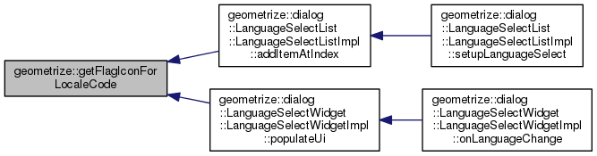
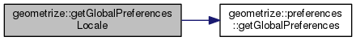
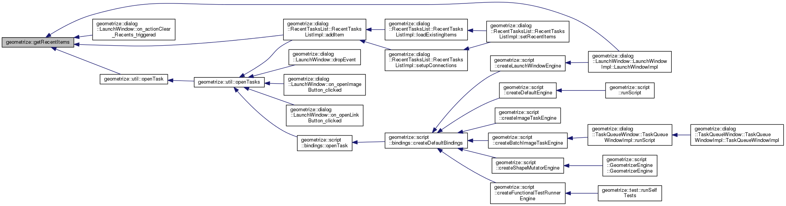
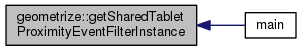
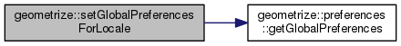
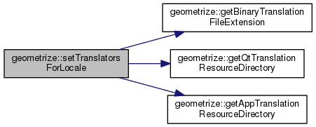
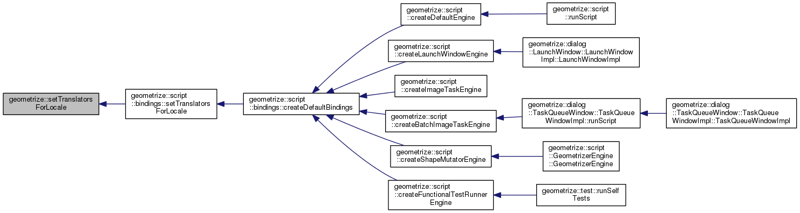

|
Geometrize
1.0
An application for geometrizing images into geometric primitives
|
|
Geometrize
1.0
An application for geometrizing images into geometric primitives
|
< Energy function passed to the image task worker thread. More...
Namespaces | |
| cli | |
| common | |
| constants | |
| dialog | |
| exporter | |
| format | |
| image | |
| layout | |
| network | |
| preferences | |
| scene | |
| script | |
| searchpaths | |
| serialization | |
| strings | |
| task | |
| test | |
| util | |
| version | |
Classes | |
| class | TemplateManifest |
| The TemplateManifest class represents the metadata for a task template. More... | |
| class | RecentItem |
| The RecentItem class models an item that was recently interacted with. More... | |
| class | RecentItems |
| The RecentItems class encapsulates a list of items that were recently interacted with. The class keeps a record of these items stored in preferences. Useful for keeping track of recently opened files. More... | |
| class | TabletProximityEventFilter |
| The TabletProximityEventFilter captures tablet enter/exit proximity events (like when Wacom pens are held close to the screen) Used to hide the cursor so it doesn't get in the way of wherever the pen is being held. More... | |
Functions | |
| QString | getBinaryTranslationFileExtension () |
| getBinaryTranslationFileExtension Gets the file extension for Qt binary translation files. More... | |
| QString | getAppTranslationResourceDirectory () |
| getAppTranslationResourceDirectory Gets the resource path where translation files specific to the app are stored. More... | |
| QString | getQtTranslationResourceDirectory () |
| getQtTranslationResourceDirectory Gets the resource path where translation files for Qt itself are stored. More... | |
| void | setTranslatorsForLocale (const QString &locale) |
| installTranslatorsForLocale Installs translators for the application. More... | |
| QIcon | getFlagIconForLocaleCode (const QString &localeCode) |
| getFlagIconForLocaleCode Gets a representative national flag for the given locale code. More... | |
| QLocale | getGlobalPreferencesLocale () |
| getGlobalPreferencesLocale Gets a QLocale instance based on the current settings in global preferences. Note that if the string violates the locale format, the "C" locale is used instead. More... | |
| void | setGlobalPreferencesForLocale (const QLocale &locale) |
| setGlobalPreferencesForLocale Sets the locale settings based on the given locale name. More... | |
| RecentItems & | getRecentItems () |
| getRecentItems Gets a reference to the recent files list. More... | |
| TabletProximityEventFilter & | getSharedTabletProximityEventFilterInstance () |
| getSharedTabletProximityEventFilterInstance Gets a reference to the shared instance of the tablet proximity event filter (since we currently only need one to give to the application instance) More... | |
Variables | |
| const QString | flagIconResourceDirectory {":/flags/"} |
| const QString | flagIconFileExtension {".png"} |
| const QString | errorFlagResourcePath {":/icons/error.png"} |
| const QString | qtTranslationFilePrefix {"qt_"} |
| const QString | qtBaseTranslationFilePrefix {"qtbase_"} |
| const QString | geometrizeTranslationFilePrefix {"geometrize_"} |
< Energy function passed to the image task worker thread.
| QString geometrize::getAppTranslationResourceDirectory | ( | ) |
| QString geometrize::getBinaryTranslationFileExtension | ( | ) |
| QIcon geometrize::getFlagIconForLocaleCode | ( | const QString & | localeCode | ) |
getFlagIconForLocaleCode Gets a representative national flag for the given locale code.
| localeCode | A string in the form language_country_locale. |

| QLocale geometrize::getGlobalPreferencesLocale | ( | ) |
getGlobalPreferencesLocale Gets a QLocale instance based on the current settings in global preferences. Note that if the string violates the locale format, the "C" locale is used instead.

| QString geometrize::getQtTranslationResourceDirectory | ( | ) |
| RecentItems & geometrize::getRecentItems | ( | ) |
getRecentItems Gets a reference to the recent files list.
getRecentItems Gets a reference to the app's recently opened files.

| TabletProximityEventFilter & geometrize::getSharedTabletProximityEventFilterInstance | ( | ) |
getSharedTabletProximityEventFilterInstance Gets a reference to the shared instance of the tablet proximity event filter (since we currently only need one to give to the application instance)

| void geometrize::setGlobalPreferencesForLocale | ( | const QLocale & | locale | ) |
setGlobalPreferencesForLocale Sets the locale settings based on the given locale name.
| localeName | The locale name. Note this sets only the language and country, not the script or other settings. Even if the string violates the locale format, the string may be saved to the preferences anyway. |

| void geometrize::setTranslatorsForLocale | ( | const QString & | locale | ) |
installTranslatorsForLocale Installs translators for the application.
| locale | A string in the form language_country. Note this is not threadsafe. |


| const QString geometrize::errorFlagResourcePath {":/icons/error.png"} |
| const QString geometrize::flagIconFileExtension {".png"} |
| const QString geometrize::flagIconResourceDirectory {":/flags/"} |
| const QString geometrize::geometrizeTranslationFilePrefix {"geometrize_"} |
| const QString geometrize::qtBaseTranslationFilePrefix {"qtbase_"} |
| const QString geometrize::qtTranslationFilePrefix {"qt_"} |
 1.8.6
1.8.6